Blue's Clues Downloadable Games
 2/3
2/3 

Blue 201 - Healthy Snacks
Can you help choose which healthy snacks belong in the same group?
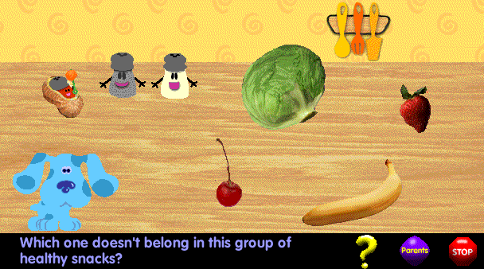
Note: This is a 16-bit program and requires special programs to run on 64-bit Windows, such as otvdm.
DOWNLOAD
 .exe file zipped (1.36 MB)
.exe file zipped (1.36 MB)
Blue 202 - The Popsicle Stick Project
Blue's working on a project with the popsicle sticks. Help them complete their creations!
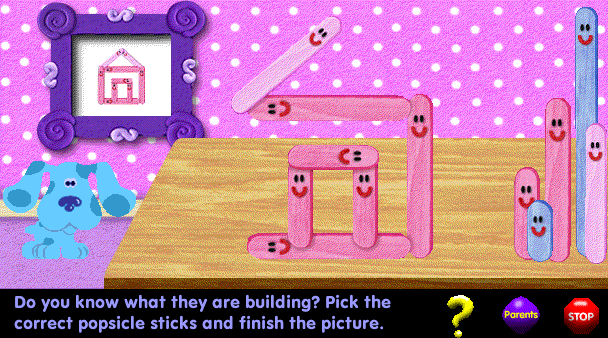
Note: This is a 16-bit program and requires special programs to run on 64-bit Windows, such as otvdm.
DOWNLOAD
.exe file zipped (1.43 MB)
Blue 203 - Lights On, Lights Off!
Blue's putting away her toys. Can you remember which ones she puts away when the lights go off?
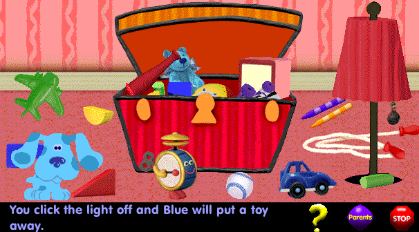
DOWNLOAD
.exe file zipped (1.71 MB)
Blue 204 - Let's Dream!
We're experimenting with Slippery Soap. Find out which objects sink and which ones float!
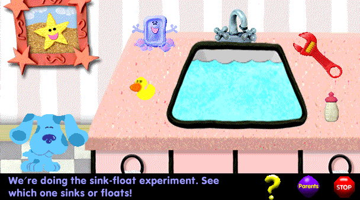
Note: This is a 16-bit program and requires special programs to run on 64-bit Windows, such as otvdm.
DOWNLOAD
.exe file zipped (1.29 MB)
Blue 205 - Recycle!
Get ready to recycle. Put the paper, plastic and metal in the correct recycling bins!
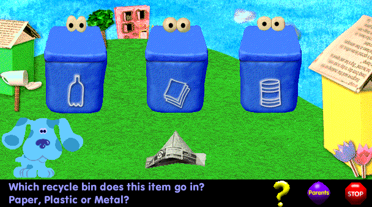
Note: This is a 16-bit program and requires special programs to run on 64-bit Windows, such as otvdm.
DOWNLOAD
.exe file zipped (1.44 MB)
Blue 206 - Let's Dream!
Slippery Soap and Paprika are dreaming. Can you figure out what their dreams are about?
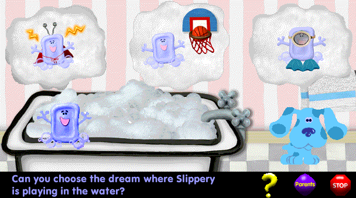
Note: This is a 16-bit program and requires special programs to run on 64-bit Windows, such as otvdm.
DOWNLOAD
.exe file zipped (1.84 MB)
Blue 207 - Blue's ABCs
Mr. Salt and Mrs. Pepper are going shopping. Can you match the words on their grocery list with the right foods?
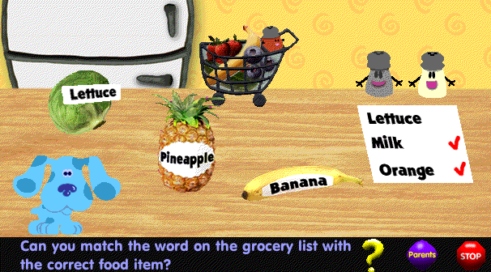
DOWNLOAD
.exe file zipped (1.75 MB)
Blue 208 - Counting With Cash Register!
Practice your numbers with Cash Register!
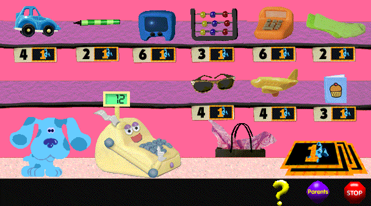
Note: This is a 16-bit program and requires special programs to run on 64-bit Windows, such as otvdm.
DOWNLOAD
.exe file zipped (1.36 MB)
Blue 209 - Blue's Birthday!
It's Blue's birthday party and you're invited. Set the table with Blue, open presents and pin the flag on Mailbox!
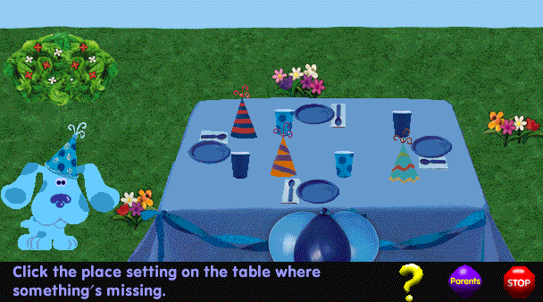
Note: This is a 16-bit program and requires special programs to run on 64-bit Windows, such as otvdm.
DOWNLOAD
.exe file zipped (1.88 MB)
Blue 211 - Water Xylophone!
Play the water xylophone with Mr. Salt and Mrs. Pepper. Fill the jars with water and make your music!
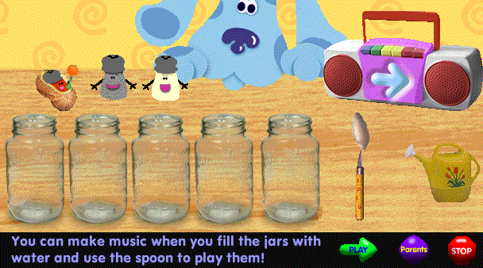
Note: This is a 16-bit program and requires special programs to run on 64-bit Windows, such as otvdm.
DOWNLOAD
.exe file zipped (1.41 MB)
Blue 212 - Race Against Time
There's not much time! Can you match the picture and beat the clock?
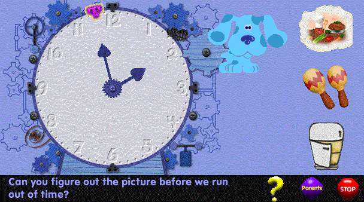
Note: This is a 16-bit program and requires special programs to run on 64-bit Windows, such as otvdm.
DOWNLOAD
.exe file zipped (1.41 MB)
Blue 213 - Lost and Found
Felix has lost some things on his way to school. Can you help him find them?
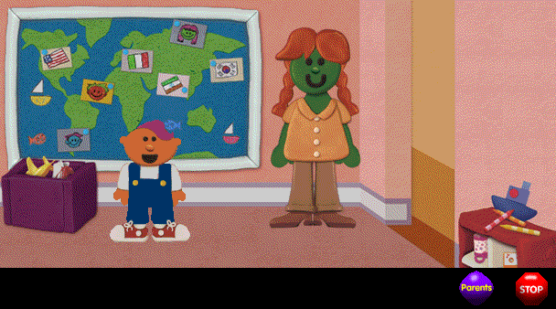
Note: This is a 16-bit program and requires special programs to run on 64-bit Windows, such as otvdm.
DOWNLOAD
.exe file zipped (1.55 MB)
Blue 214 - Feelings
Everyone has feelings. Find out how our friends feel by matching the expressions on the cards with the expressions on their faces.
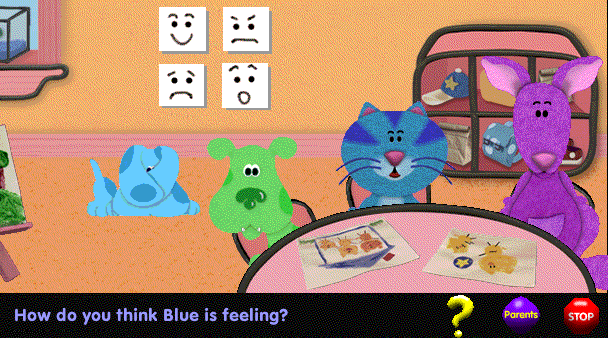
Note: This is a 16-bit program and requires special programs to run on 64-bit Windows, such as otvdm.
DOWNLOAD
.exe file zipped (1.51 MB)
Blue 215 - Felt Friend Tic-Tac-Toe
O Felt Friend is learning to play tic-tac-toe. Help her practice and try to win!
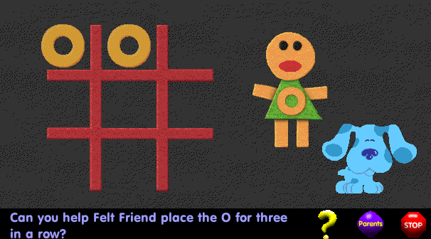
DOWNLOAD
.exe file zipped (1.90 MB)
Blue 216 - What Does Paprika Need?
Taking care of Paprika isn't easy. Can you give her what she needs so she'll stop crying?
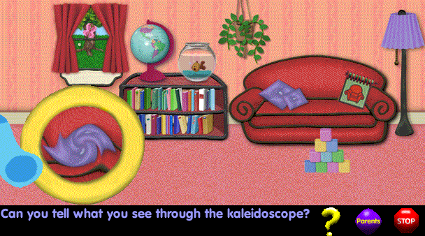
Note: This is purely a Shockwave file and requires a projector to run.
DOWNLOAD
.dcr file (623 KB)
Blue 217 - What Does Paprika Need?
Taking care of Paprika isn't easy. Can you give her what she needs so she'll stop crying?
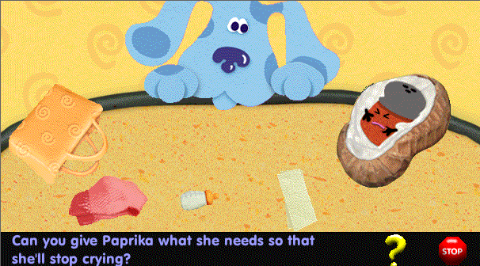
DOWNLOAD
.exe file zipped (1.79 MB)
Blue 218 - Teeter-Totter
It's teeter-totter time for Rabbit and Blue. Help them balance it by using the blocks.
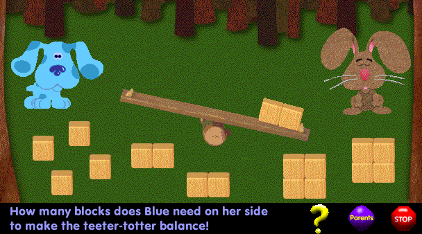
Note: This is a 16-bit program and requires special programs to run on 64-bit Windows, such as otvdm.
DOWNLOAD
.exe file zipped (1.36 MB)
Blue 219 - Blowing Matching Bubbles!
Slippery Soap is blowing bubbles. Can you help him make them the right size?
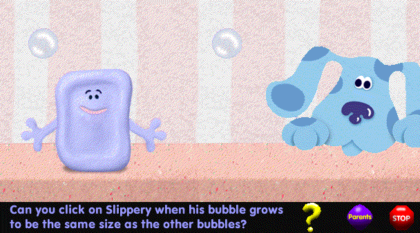
Note: This is a 16-bit program and requires special programs to run on 64-bit Windows, such as otvdm.
DOWNLOAD
.exe file zipped (1.50 MB)
Blue 220 - Racing Cars!
Shovel and Pail are racing cars on the ramps. It's up to you to help one of them win!
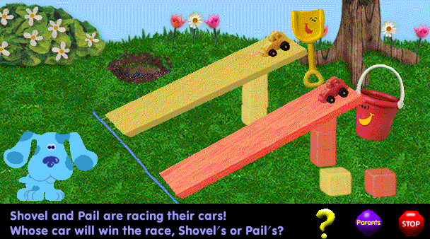
Note: This is a 16-bit program and requires special programs to run on 64-bit Windows, such as otvdm.
DOWNLOAD
.exe file zipped (1.52 MB)